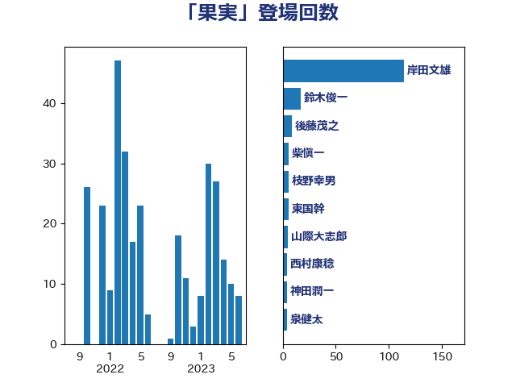

単語「果実」

| 岸田文雄 | 自由民主党 | 114 回 |
| 鈴木俊一 | 自由民主党 | 17 回 |
| 後藤茂之 | 自由民主党 | 9 回 |
| 柴愼一 | 立憲民主党 | 6 回 |
| 枝野幸男 | 立憲民主党 | 6 回 |
| 東国幹 | 自由民主党 | 6 回 |
| 山際大志郎 | 自由民主党 | 5 回 |
| 西村康稔 | 自由民主党 | 4 回 |
| 神田潤一 | 自由民主党 | 4 回 |
| 泉健太 | 立憲民主党 | 4 回 |
| 末松信介 | 自由民主党 | 4 回 |
| 小池晃 | 日本共産党 | 3 回 |
| 住吉寛紀 | 日本維新の会 | 3 回 |
| 伊藤孝恵 | 国民民主党 | 3 回 |
| 三上えり | 立憲民主党 | 3 回 |
| 馬場伸幸 | 日本維新の会 | 2 回 |
| 藤木眞也 | 自由民主党 | 2 回 |
| 藤岡隆雄 | 立憲民主党 | 2 回 |
| 落合貴之 | 立憲民主党 | 2 回 |
| 竹内譲 | 公明党 | 2 回 |
| 秋野公造 | 公明党 | 2 回 |
| 石原宏高 | 自由民主党 | 2 回 |
| 田村貴昭 | 日本共産党 | 2 回 |
| 源馬謙太郎 | 立憲民主党 | 2 回 |
| 柳ヶ瀬裕文 | 日本維新の会 | 2 回 |
| 林芳正 | 自由民主党 | 2 回 |
| 松山政司 | 自由民主党 | 2 回 |
| 斉藤鉄夫 | 公明党 | 2 回 |
| 大塚耕平 | 国民民主党 | 2 回 |
| 前原誠司 | 国民民主党 | 2 回 |
| 佐藤信秋 | 自由民主党 | 2 回 |
| 中谷真一 | 自由民主党 | 2 回 |
| 鬼木誠 | 立憲民主党 | 1 回 |
| 高橋千鶴子 | 日本共産党 | 1 回 |
| 馬場雄基 | 立憲民主党 | 1 回 |
| 青柳仁士 | 日本維新の会 | 1 回 |
| 阿部司 | 日本維新の会 | 1 回 |
| 鈴木敦 | 国民民主党 | 1 回 |
| 野間健 | 立憲民主党 | 1 回 |
| 野村哲郎 | 自由民主党 | 1 回 |
| 辻元清美 | 立憲民主党 | 1 回 |
| 越智隆雄 | 自由民主党 | 1 回 |
| 赤木正幸 | 日本維新の会 | 1 回 |
| 西銘恒三郎 | 自由民主党 | 1 回 |
| 萩生田光一 | 自由民主党 | 1 回 |
| 茂木敏充 | 自由民主党 | 1 回 |
| 若松謙維 | 公明党 | 1 回 |
| 舞立昇治 | 自由民主党 | 1 回 |
| 羽田次郎 | 立憲民主党 | 1 回 |
| 竹詰仁 | 国民民主党 | 1 回 |
| 稲津久 | 公明党 | 1 回 |
| 牧島かれん | 自由民主党 | 1 回 |
| 深澤陽一 | 自由民主党 | 1 回 |
| 河野義博 | 公明党 | 1 回 |
| 河野太郎 | 自由民主党 | 1 回 |
| 沢田良 | 日本維新の会 | 1 回 |
| 江田憲司 | 立憲民主党 | 1 回 |
| 武部新 | 自由民主党 | 1 回 |
| 榛葉賀津也 | 国民民主党 | 1 回 |
| 柴田巧 | 日本維新の会 | 1 回 |
| 有村治子 | 自由民主党 | 1 回 |
| 斎藤嘉隆 | 立憲民主党 | 1 回 |
| 徳永久志 | 無所属 | 1 回 |
| 平沼正二郎 | 自由民主党 | 1 回 |
| 川合孝典 | 国民民主党 | 1 回 |
| 岬麻紀 | 日本維新の会 | 1 回 |
| 岡田直樹 | 自由民主党 | 1 回 |
| 山本佐知子 | 自由民主党 | 1 回 |
| 小沼巧 | 立憲民主党 | 1 回 |
| 小林鷹之 | 自由民主党 | 1 回 |
| 寺田静 | 無所属 | 1 回 |
| 宮下一郎 | 自由民主党 | 1 回 |
| 守島正 | 日本維新の会 | 1 回 |
| 奥下剛光 | 日本維新の会 | 1 回 |
| 太田房江 | 自由民主党 | 1 回 |
| 大野敬太郎 | 自由民主党 | 1 回 |
| 堤かなめ | 立憲民主党 | 1 回 |
| 吉良州司 | 無所属 | 1 回 |
| 勝目康 | 自由民主党 | 1 回 |
| 加藤勝信 | 自由民主党 | 1 回 |
| 保岡宏武 | 自由民主党 | 1 回 |
| 佐藤啓 | 自由民主党 | 1 回 |
| 井林辰憲 | 自由民主党 | 1 回 |
| 中村裕之 | 自由民主党 | 1 回 |
| 上川陽子 | 自由民主党 | 1 回 |
| たがや亮 | れいわ新選組 | 1 回 |
| こやり隆史 | 自由民主党 | 1 回 |